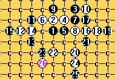
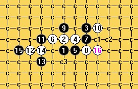
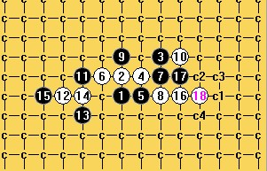
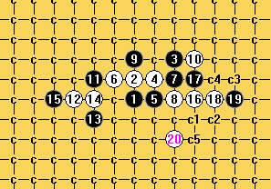

关于我对疏星白16的研究，除黑最强防我差不多地毯了
#1 关于我对疏星白16的研究，除黑最强防我差不多地毯了 作者：离子阵阵雨 发表时间：2011-8-25 14:31:58
=======上图对应的爱五子棋谱代码如下，以便你拆解：========
h8h9j10i9i8g9j9j8h10k10f9e8f7f8d8k7f10
======================================================
上次只是单单研究了那个弱黑17的必败毛巾，这次除了这个最强黑17外，其他本人已终结，不是地毯，是毛巾，但是我的终结者太烂，可能会出现算错的小问题，但是问题不大，自己应该能解决得掉。
我喜欢讨论，破饼等我说完再发。
［ 屏蔽 于 2011-8-26 5:45:06 时花20金币送鲜花一朵］
［ 第五象限 于 2011-10-15 23:52:10 时花20金币送鲜花一朵］
#2 Re:关于我对疏星白16的研究，除黑最强防我差不多地毯了 作者：屏蔽 发表时间：2011-8-25 14:39:41
 标题党
标题党［ 三鹿十八碗 于 2013-3-21 11:58:22 时花50金币砸了你一个臭鸡蛋］
［ 三鹿十八碗 于 2013-3-21 11:58:50 时花50金币砸了你一个臭鸡蛋］
［ 三鹿十八碗 于 2013-3-21 11:59:06 时花50金币砸了你一个臭鸡蛋］
#3 Re:关于我对疏星白16的研究，除黑最强防我差不多地毯了 作者：离子阵阵雨 发表时间：2011-8-25 14:39:56
=======上图对应的爱五子棋谱代码如下，以便你拆解：========
h8h9j10i9i8g9j9j8h10k10f9e8f7f8d8k7h7a15f5a14i6a13g5a12i10a11i7
======================================================在这种情况下，黑的强防基本都是需要靠进攻缓解，因为这个变化本身就是黑杀不出就败的变化。所以若是要拆这种棋，只要保证黑攻不出还能保证自己的优势就够了，以上是黑较强的防御基本都属于靠进攻缓解白棋的优势从而希望能够防住，所以在我们下棋特别是新手，下棋太过保守，反而会丧失机会，但是也不可太过积极一定要算清再下否则很可能攻崩。黑15就是太过保守，最强黑17就是靠进攻缓解白棋优势的典例。
［此帖子已被 离子阵阵雨 在 2011-8-25 14:40:45 编辑过］
［ 小红眼镜 于 2011-8-25 18:10:14 时花20金币送鲜花一朵］
#4 Re:关于我对疏星白16的研究，除黑最强防我差不多地毯了 作者：离子阵阵雨 发表时间：2011-8-25 14:51:44
晕，刚掉线了。屏蔽去死，我才不是什么标题党呢。想吃饼，一朵花一块饼！
然后我随便摆几个变化就发棋谱吧。。。想讨论也不知道说什么，明明在这次做棋谱感觉提高了很多，学到了很多有用的知识咋就是不知道咋说捏，难道语文水平太差。。。
=======上图对应的爱五子棋谱代码如下，以便你拆解：========
h8h9j10i9i8g9j9j8h10k10f9e8f7f8d8k7f5j6e7h7g5f6i5h5
======================================================
#5 Re:关于我对疏星白16的研究，除黑最强防我差不多地毯了 作者：离子阵阵雨 发表时间：2011-8-25 14:52:12
=======上图对应的爱五子棋谱代码如下，以便你拆解：========
h8h9j10i9i8g9j9j8h10k10f9e8f7f8d8k7i7g7i5i6
======================================================
#6 Re:关于我对疏星白16的研究，除黑最强防我差不多地毯了 作者：离子阵阵雨 发表时间：2011-8-25 14:52:50
=======上图对应的爱五子棋谱代码如下，以便你拆解：========
h8h9j10i9i8g9j9j8h10k10f9e8f7f8d8k7k8l6m5l7m7k6l8k9
======================================================
#7 Re:关于我对疏星白16的研究，除黑最强防我差不多地毯了 作者：离子阵阵雨 发表时间：2011-8-25 14:54:55
好了我发棋谱了。。。。求讨论求交流求回复。。。我热爱回答问题 但是只限基础知识。
但是只限基础知识。 新建 WinRAR ZIP 压缩文件.zip
新建 WinRAR ZIP 压缩文件.zip［ 屏蔽 于 2011-8-25 15:59:44 时奖励此帖[金币加 100 威望加1］
［ 米 于 2011-8-26 0:50:39 时花20金币送鲜花一朵］
#8 Re:关于我对疏星白16的研究，除黑最强防我差不多地毯了 作者：sonix 发表时间：2011-8-25 15:33:58
=======上图对应的爱五子棋谱代码如下，以便你拆解：========
h8h9j10i9i8g9j9j8h10k10f9e8f7f8d8k7g10i10h7
======================================================
这个好像有问题
［ 踵酃 于 2011-8-25 16:34:39 时花20金币送鲜花一朵］
#9 Re:关于我对疏星白16的研究，除黑最强防我差不多地毯了 作者：aabb 发表时间：2011-8-25 15:43:23
=======上图对应的爱五子棋谱代码如下，以便你拆解：========
h8h9j10i9i8g9j9j8h10k10f9e8f7f8d8k7i10k8k9m8
======================================================
我记得论坛里有人发过这个20可以杀？
#10 Re:Re:关于我对疏星白16的研究，除黑最强防我差不多地毯了 作者：离子阵阵雨 发表时间：2011-8-25 16:06:27
引用：非常感谢，似乎问题还不小，我这就马上重新拆一下
原文由 sonix 发表于 2011-8-25 15:33:58 :
=======上图对应的爱五子棋谱代码如下，以便你拆解：========
h8h9j10i9i8g9j9j8h10k10f9e8f7f8d8k7g10i10h7
======================================================这个好像有问题
#11 Re:Re:关于我对疏星白16的研究，除黑最强防我差不多地毯了 作者：离子阵阵雨 发表时间：2011-8-25 17:03:26
引用：啊- -擦，不行了，发现这个还挺难。。。那么标题改为除黑最强和次强我差不多地毯了。。。。
原文由 sonix 发表于 2011-8-25 15:33:58 :
=======上图对应的爱五子棋谱代码如下，以便你拆解：========
h8h9j10i9i8g9j9j8h10k10f9e8f7f8d8k7g10i10h7
======================================================这个好像有问题
［ 踵酃 于 2011-8-25 16:34:39 时花20金币送鲜花一朵］
#12 Re:关于我对疏星白16的研究，除黑最强防我差不多地毯了 作者：自来水 发表时间：2011-8-25 19:51:53
 玩大了...
玩大了...
#13 Re:关于我对疏星白16的研究，除黑最强防我差不多地毯了 作者：连心 发表时间：2011-8-25 20:24:13
支持#14 Re:关于我对疏星白16的研究，除黑最强防我差不多地毯了 作者：怪 发表时间：2011-8-25 20:29:35
#15 Re:关于我对疏星白16的研究，除黑最强防我差不多地毯了 作者：隐藏菜系 发表时间：2011-8-25 21:12:30
擦。。拆了半天发现和你拆的根本不是一个局面！#16 Re:关于我对疏星白16的研究，除黑最强防我差不多地毯了 作者：悠悠紫叶情 发表时间：2011-8-25 22:18:05
支持LZ一个，这个15地毯起来相当麻烦#17 Re:关于我对疏星白16的研究，除黑最强防我差不多地毯了 作者：米 发表时间：2011-8-26 0:48:41
楼主的研究热情令人钦佩，也给大家提供了学习的材料。但我得为楼主的成果做个勘误表如下：
=======上图对应的爱五子棋谱代码如下，以便你拆解：========
h8h9j10i9i8g9j9j8h10k10f9e8f7f8d8k7g10i10j11j6
======================================================
此白必败图被楼主说成白必胜。黑g11杀。
=======上图对应的爱五子棋谱代码如下，以便你拆解：========
h8h9j10i9i8g9j9j8h10k10f9e8f7f8d8k7g10i10h7n7
======================================================
此白必败图被楼主说成白必胜。黑g8杀。
=======上图对应的爱五子棋谱代码如下，以便你拆解：========
h8h9j10i9i8g9j9j8h10k10f9e8f7f8d8k7i7g7e9i5
======================================================
此白必败图被楼主说成白必胜。黑f10杀。
=======上图对应的爱五子棋谱代码如下，以便你拆解：=======
h8h9j10i9i8g9j9j8h10k10f9e8f7f8d8k7i7g7g6n7
======================================================
此白必败图被楼主说成白必胜。黑h7杀。白20手如改走i6则白真的必胜。
=======上图对应的爱五子棋谱代码如下，以便你拆解：========
h8h9j10i9i8g9j9j8h10k10f9e8f7f8d8k7f5j6
======================================================
此图后面黑的反击过多，不容易穷尽，楼主没有穷尽，如白18改走h7则白简单必胜。
综上所述，黑17还有f10,g10,i7三点有待研究。其中黑17走g10白18走i10后还有h7,j11两点有待研究，黑17走i7白18走g7后还有e9有待研究，其余都是白必胜。
［ 踵酃 于 2011-8-26 2:29:03 时奖励此帖[金币加 100 威望加1］
［ 离子阵阵雨 于 2011-8-26 2:58:05 时花20金币送鲜花一朵］
［ 离子阵阵雨 于 2011-8-26 11:39:45 时花20金币送鲜花一朵］
#18 Re:关于我对疏星白16的研究，除黑最强防我差不多地毯了 作者：嵯峨 发表时间：2011-8-26 1:22:20

#19 Re:Re:关于我对疏星白16的研究，除黑最强防我差不多地毯了 作者：离子阵阵雨 发表时间：2011-8-26 2:57:25
引用：非常感谢，你的纠正对我帮助实在不小，我会将您所说的点重新改正
原文由 米 发表于 2011-8-26 0:48:41 :楼主的研究热情令人钦佩，也给大家提供了学习的材料。但我得为楼主的成果做个勘误表如下：
=======上图对应的爱五子棋谱代码如下，以便你拆解：========
h8h9j10i9i8g9j9j8h10k10f9e8f7f8d8k7g10i10j11j6
======================================================此白必败图被楼主说成白必胜。黑g11杀。
=======上图对应的爱五子棋谱代码如下，以便你拆解：========
h8h9j10i9i8g9j9j8h10k10f9e8f7f8d8k7g10i10h7n7
======================================================此白必败图被楼主说成白必胜。黑g8杀。
=======上图对应的爱五子棋谱代码如下，以便你拆解：========
h8h9j10i9i8g9j9j8h10k10f9e8f7f8d8k7i7g7e9i5
======================================================此白必败图被楼主说成白必胜。黑f10杀。
=======上图对应的爱五子棋谱代码如下，以便你拆解：=======
h8h9j10i9i8g9j9j8h10k10f9e8f7f8d8k7i7g7g6n7
======================================================此白必败图被楼主说成白必胜。黑h7杀。白20手如改走i6则白真的必胜。
=======上图对应的爱五子棋谱代码如下，以便你拆解：========
h8h9j10i9i8g9j9j8h10k10f9e8f7f8d8k7f5j6
======================================================此图后面黑的反击过多，不容易穷尽，楼主没有穷尽，如白18改走h7则白简单必胜。
综上所述，黑17还有f10,g10,i7三点有待研究。其中黑17走g10白18走i10后还有h7,j11两点有待研究，黑17走i7白18走g7后还有e9有待研究，其余都是白必胜。
［ 踵酃 于 2011-8-26 2:29:03 时奖励此帖[金币加 100 威望加1］
#20 Re:关于我对疏星白16的研究，除黑最强防我差不多地毯了 作者：离子阵阵雨 发表时间：2011-8-26 2:59:09
做到现在我才发现我终结者为什么这么多问题了，原来是我把设置里的容错搜索给勾上了，我勒个去，希望再扫描能够好一点吧，我会加油的#21 Re:关于我对疏星白16的研究，除黑最强防我差不多地毯了 作者：絕版賭徒 发表时间：2011-8-26 3:37:20
LS告诉你个秘密,我曾用一个错误的终结者设置,把瑞星二打给地毯了,,,,,
#22 Re:Re:关于我对疏星白16的研究，除黑最强防我差不多地毯了 作者：屏蔽 发表时间：2011-8-26 5:48:19
引用：
原文由 离子阵阵雨 发表于 2011-8-26 2:59:09 :
做到现在我才发现我终结者为什么这么多问题了，原来是我把设置里的容错搜索给勾上了，我勒个去，希望再扫描能够好一点吧，我会加油的
那个选项是啥意思……我也勾着呢，不过做谱一般没啥问题。
#23 Re:关于我对疏星白16的研究，除黑最强防我差不多地毯了 作者：sonix 发表时间：2011-8-26 7:05:17
=======上图对应的爱五子棋谱代码如下，以便你拆解：========
h8h9j10i9i8g9j9j8h10k10f9e8f7f8d8k7i6j5
======================================================
这个没问题吧。。
#24 Re:Re:关于我对疏星白16的研究，除黑最强防我差不多地毯了 作者：米 发表时间：2011-8-26 8:01:04
=======上图对应的爱五子棋谱代码如下，以便你拆解：========
h8h9j10i9i8g9j9j8h10k10f9e8f7f8d8k7i6j5j7k8k6l8i7l6m5l9
======================================================
楼上的没问题，具体演变如上。只有三个17有待研究，f10,g10,i7。我如果有空计划先看看i7，似乎有些希望，但相当繁琐，暂无结论。
［ 茗弈宽容 于 2011-8-26 12:12:38 时花20金币送鲜花一朵］
#25 Re:关于我对疏星白16的研究，除黑最强防我差不多地毯了 作者：sonix 发表时间：2011-8-26 8:41:50
17-i7的话，18-i6好像比较简单。［ 米 于 2011-8-26 8:46:18 时花20金币送鲜花一朵］
［ 离子阵阵雨 于 2011-8-26 11:44:51 时花20金币送鲜花一朵］
#26 Re:Re:关于我对疏星白16的研究，除黑最强防我差不多地毯了 作者：米 发表时间：2011-8-26 8:48:20
楼上好棋啊，一下就杀掉了，这样只剩两个17了：f10,g10。#27 Re:关于我对疏星白16的研究，除黑最强防我差不多地毯了 作者：离子阵阵雨 发表时间：2011-8-26 11:45:59
好吧现在还有两个17我的重新去拆#28 Re:Re:Re:关于我对疏星白16的研究，除黑最强防我差不多地毯了 作者：离子阵阵雨 发表时间：2011-8-26 11:55:16
引用：
原文由 米 发表于 2011-8-26 8:48:20 :
楼上好棋啊，一下就杀掉了，这样只剩两个17了：f10,g10。
米大师真心求教，黑17，G10后白到底应该下哪最好，我选了好几个点发现扫出来后都差不多
#29 Re:Re:Re:Re:关于我对疏星白16的研究，除黑最强防我差不多地毯了 作者：米 发表时间：2011-8-27 8:08:34
这两个最强黑17我都没有结论，但楼上既然问到我头上，我就说说一些一般性的研棋建议吧。第一，把必败的点先标出，就排除掉缩小了选点范围。第二，无论你的研究有多失败多郁闷，在有定论前，都不要删除失败的分支，因为即使第一步不对，也可能后面你哪个杀掉的分支和以后成功的分支同型，就避免了重复劳动，失败是成功之母嘛。第三，如果实在卡住，也可以把目前的结果给大家看看，也许能互相启发。第四，宁可放过一千，绝不错杀一个，如果你的地毯里有错杀，以后要花较大精力排除。最后，尽管贵在坚持，有时候也贵在放弃，不要走火入魔。一家之言，仅供参考。
［此帖子已被 米 在 2011-8-27 8:10:12 编辑过］
［ 第五象限 于 2011-10-16 0:01:43 时花20金币送鲜花一朵］
#30 Re:关于我对疏星白16的研究，除黑最强防我差不多地毯了 作者：棋元道 发表时间：2011-10-15 22:13:09
很有问题，黑17G10黑优，I10也不是败#31 Re:关于我对疏星白16的研究，除黑最强防我差不多地毯了 作者：中原一点红 发表时间：2012-12-24 6:01:31
回楼上.rar
#32 Re:关于我对疏星白16的研究，除黑最强防我差不多地毯了 作者：闹静 发表时间：2012-12-24 9:35:41
这个16手地毯
［ 失落刀 于 2012-12-25 18:15:45 时奖励此帖[金币加 100 威望加1］
#33 Re:关于我对疏星白16的研究，除黑最强防我差不多地毯了 作者：三鹿十八碗 发表时间：2012-12-24 19:32:41
楼上大师，这两个怎么解决？
#34 Re:关于我对疏星白16的研究，除黑最强防我差不多地毯了 作者：八了个卦 发表时间：2012-12-24 21:11:53
原来当初的离子这么正经！#35 Re:关于我对疏星白16的研究，除黑最强防我差不多地毯了 作者：山城刀客 发表时间：2012-12-25 11:54:48
这个怎么搞？对我来说这是唯一的难题！！！
如果是这个20,21后白棋怎么地毯？
如果是这个22，两个23怎么搞定？
如果是这个22，两个23怎么搞定？
至于别的20，则更难地毯了吧！
#36 Re:山城刀客【==Re:关于我对疏星白16的研究，除黑最强防我差不多地毯了==】 作者：sonix 发表时间：2012-12-25 13:17:19
［ 失落刀 于 2012-12-25 18:16:27 时花20金币送鲜花一朵］
［ 山城刀客 于 2012-12-25 22:42:09 时花20金币送鲜花一朵］
［ 山城刀客 于 2012-12-25 22:42:09 时花20金币送鲜花一朵］
［ 山城刀客 于 2012-12-25 22:42:09 时花20金币送鲜花一朵］
［ 山城刀客 于 2012-12-25 22:42:09 时花20金币送鲜花一朵］
［ 山城刀客 于 2012-12-25 22:42:09 时花20金币送鲜花一朵］
#37 Re:关于我对疏星白16的研究，除黑最强防我差不多地毯了 作者：山城刀客 发表时间：2012-12-25 22:44:35
这个20难度也很大呀，没几天时间是搞不定的
#38 Re:关于我对疏星白16的研究，除黑最强防我差不多地毯了 作者：虎哥 发表时间：2012-12-25 22:50:07
楼上的刀客兄弟，可以直接Q我［ 山城刀客 于 2012-12-28 2:26:34 时花20金币送鲜花一朵］
［ 山城刀客 于 2012-12-28 2:26:34 时花20金币送鲜花一朵］
［ 山城刀客 于 2012-12-28 2:26:34 时花20金币送鲜花一朵］
［ 山城刀客 于 2012-12-28 2:26:34 时花20金币送鲜花一朵］
［ 山城刀客 于 2012-12-28 2:26:34 时花20金币送鲜花一朵］
#39 Re:关于我对疏星白16的研究，除黑最强防我差不多地毯了 作者：山城刀客 发表时间：2012-12-28 2:22:14

地毯这个真费劲呀，还得感谢sonix大师和虎哥提供最强一路的研究，我自己是没拆出。


经过自己亲身拆解，这个15必败看来千真万确，过程真是太不容易了！再次感谢提供帮助的两位大师！！！
#40 Re:关于我对疏星白16的研究，除黑最强防我差不多地毯了 作者：继续沉醉 发表时间：2013-1-10 23:47:26
你研究白224吧，这个更牛逼
［ 虎哥 于 2013-1-11 23:56:44 时花50金币砸了你一个臭鸡蛋］